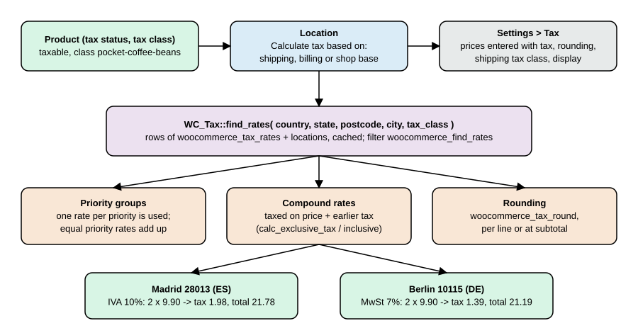
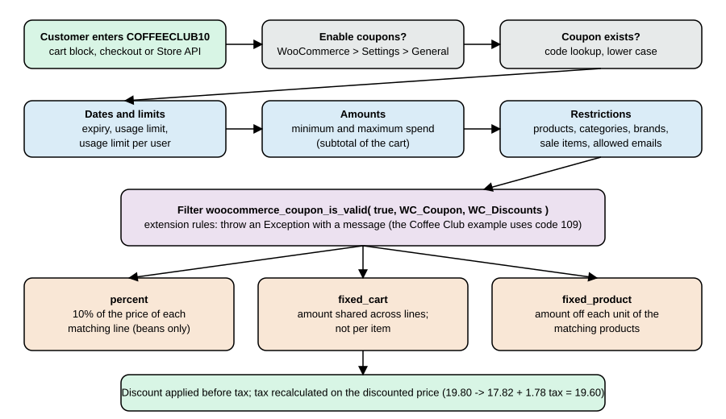
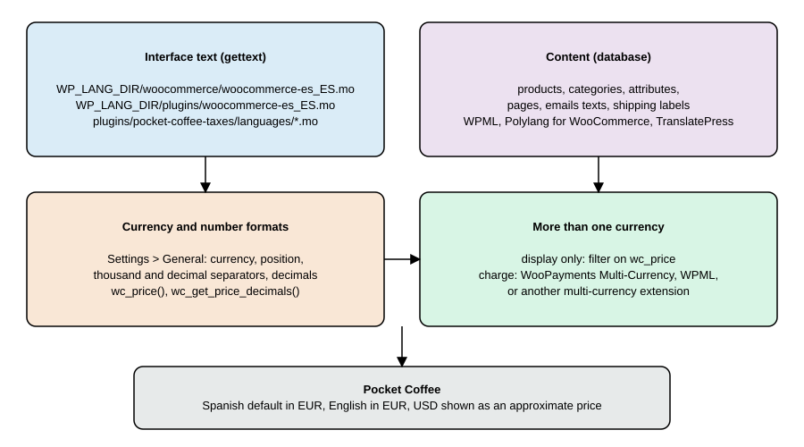

Taxes, Coupons, Currencies and i18n
|
This content was generated with the assistance of AI and should be verified against the official documentation before being relied on in production. |
Four things decide what a WooCommerce shopper sees in the cart and what a merchant has to report afterwards: how tax is computed, which discounts apply, in which currency and number format the amounts are written, and in which language the interface speaks. All four are plain WordPress and WooCommerce configuration plus a handful of hooks, so they are easy to change and easy to get subtly wrong. This page explains the model behind each one, shows the settings, the WP-CLI commands, the REST calls and the PHP hooks that touch it, and builds them for Pocket Coffee. It was written against WooCommerce 11.2.1 on WordPress 7.1.3 and checked on 2026-10-27; everything described is part of WooCommerce core except where an extension is named explicitly.
The running example is the Pocket Coffee shop: single-origin beans taxed at a reduced rate in Spain and in Germany, a Coffee Club coupon that only members can use, euros as the store currency with a dollar price shown for customers outside the euro area, and a Spanish and English storefront. A small plugin, pocket-coffee-taxes, implements all of it. It was installed in a disposable WordPress 7.1.3 and WooCommerce 11.2.1 Docker stack and every command output shown below was produced there (store base: Madrid, ES:M; currency EUR; taxes enabled). The section What was run and what was not lists the limits. Related pages: Shipping Methods for the zones that decide shipping tax, Cart and Checkout Blocks for where coupons and totals are displayed, Store API for the shopper-facing cart endpoints, and REST API and Webhooks for the admin endpoints used below.
Taxes
The model
WooCommerce computes tax from four inputs.
-
A taxable item. Every product and variation has a tax status (
taxable,shippingfor "shipping only", ornone) and a tax class. Shipping, fees and coupons are taxed through the same machinery. -
A tax class. A named group of rates. WooCommerce ships the empty-slug Standard rate class plus Reduced rate and Zero rate, and the merchant can add more. In a store installed with 11.2.1 the REST route
/wc/v3/taxes/classesreturnsstandard,reduced-rateandzero-rate(checked on the test store; the slugs of custom classes are derived from their names, so Pocket Coffee Beans becomespocket-coffee-beans). -
A location. Country, state, postcode and city of whichever address the store is configured to use (shipping address, billing address or the shop base address).
-
A rate table. Rows of country, state, postcode, city, rate, name, priority, compound and shipping flags, stored per class.
WC_Tax::find_rates() receives the location and the class, looks the rows up in the woocommerce_tax_rates table (with its woocommerce_tax_rate_locations helper table for postcode and city lists), and returns the matching rates keyed by rate id. The result is cached in the taxes object-cache group, and the filter woocommerce_find_rates can change it.

Settings
Taxes are calculated only when the switch behind woocommerce_calc_taxes (General tab, Enable tax rates and calculations) is on; the Tax tab appears after that. WooCommerce > Settings > Tax then holds the options below. The "Value on the test store" column was read with wp option get and shows the defaults of a store configured with WP-CLI.
| Setting in the UI | Option name | Allowed values | Value on the test store |
|---|---|---|---|
Enable tax rates and calculations (General tab) |
|
|
|
Prices entered with tax |
|
|
|
Calculate tax based on |
|
|
|
Shipping tax class |
|
|
|
Round tax at subtotal level, instead of rounding per line |
|
|
|
Additional tax classes |
|
list of names |
empty |
Display prices in the shop |
|
|
|
Display prices during cart and checkout |
|
|
|
Price display suffix |
|
text with |
empty |
Display tax totals |
|
|
|
The first two are the ones that cause trouble. Prices entered with tax tells WooCommerce how to read the price stored on the product: as the net price (tax is added on top) or as the gross price (tax is inside). Changing it later does not rewrite products, it changes the meaning of every stored price, so decide it before importing the catalogue. Calculate tax based on chooses the location. For a shop that sells within one country the base address is enough; for cross-border sales the shipping address is the default, and the billing address is the alternative for services and digital goods taxed where the buyer lives.
The 11.2.0 changelog (2026-10-07) lists a fix that initialises new orders with the store’s current tax entry mode and preserves the saved order values when the store setting changes, so a historic order is not reinterpreted. An order exposes its mode as WC_Order::get_prices_include_tax() (on the test store order 15 reports exclusive).
Tax classes and rates
A rate is one row. The columns, from SHOW COLUMNS FROM wp_woocommerce_tax_rates on 11.2.1:
| Column | Admin label | Meaning |
|---|---|---|
|
(id) |
Primary key, used by orders to link tax lines (and by the Analytics tax lookup). |
|
Country code |
Two letters, empty for "any country". |
|
State code |
State or province code; empty for any state of the country. |
|
Rate % |
A string of up to eight characters, for example |
|
Tax name |
Label shown to the customer and used in order tax lines. |
|
Priority |
Integer. Among the rates that match, one rate per priority is applied; rates that share a priority are added together. |
|
Compound |
|
|
Shipping |
|
|
(order) |
Display order in the admin table. |
|
Tax class |
Slug of the class; empty for Standard. Newer tables also reference |
Postcodes and cities are stored in woocommerce_tax_rate_locations and accept lists separated by semicolons, ranges written as 90210...99000 and wildcards written as NR*. The rate table also exists as CSV: the admin page offers Import CSV and Export CSV with ten columns (country code, state code, ZIP/postcode, city, rate %, tax name, priority, compound, shipping, tax class), where an empty tax class means Standard.
Compound and priority are the parts people misread, so the arithmetic is worth seeing once. The test below passes two rates straight to the calculator: a regular 10% rate and a compound 5% rate. The compound rate is taken on the price plus the first tax, so on 100.00 the second tax is 5.50, not 5.00.
<?php
$rates = array(
1 => array( 'rate' => '10', 'label' => 'A', 'shipping' => 'no', 'compound' => 'no' ),
2 => array( 'rate' => '5', 'label' => 'B', 'shipping' => 'no', 'compound' => 'yes' ),
);
echo wp_json_encode( WC_Tax::calc_exclusive_tax( 100, $rates ) ), "\n";
echo wp_json_encode( WC_Tax::calc_inclusive_tax( 115.5, $rates ) ), "\n";Output on the test store (run with wp eval):
{"1":10,"2":5.5}
{"1":10,"2":5.5}
The inclusive call returns the same two amounts for a gross price of 115.50, which shows that calc_inclusive_tax() works backwards through the compound rates first and then through the regular ones.
Pocket Coffee: a tax class created by code
Rates are normally typed into the admin, but a plugin that ships with a store (or a migration script) can create the class and its rows. WC_Tax::create_tax_class() returns the class as an array with slug and name, and WC_Tax::_insert_tax_rate() inserts one row; both are internal-use APIs of the tax settings screen, which is why _insert_tax_rate() has a leading underscore, and both clear the taxes cache group. The activation routine in the plugin below installs Pocket Coffee Beans with a 10% rate for Spain and a 7% rate for Germany. The rates are illustrative: the real VAT treatment of coffee in each country must come from a tax adviser, not from this page.
The whole plugin is listed in one piece in The Pocket Coffee Taxes plugin; the sections that follow refer to its functions. After wp plugin activate pocket-coffee-taxes:
wp wc tax_class list --user=admin --format=table
wp wc tax list --user=admin --format=tableslug name standard Standard rate pocket-coffee-beans Pocket Coffee Beans reduced-rate Reduced rate zero-rate Zero rate id country state postcode city rate name priority compound shipping order class 1 ES 10.0000 IVA 10% 1 0 pocket-coffee-beans 2 DE 7.0000 MwSt 7% 1 1 pocket-coffee-beans
A product that uses the class is created with --tax_status and --tax_class (the class is addressed by slug; the product id 23 below is the id this store assigned):
wp wc product create --name="Single-origin beans 250 g (taxes demo)" --type=simple \
--regular_price=9.90 --sku=PC-TAX-ETH-WHL-250 --tax_status=taxable \
--tax_class=pocket-coffee-beans --user=admin --porcelainWhat the customer pays
Asking the calculator directly shows the location matching. On the test store (base Madrid):
<?php
foreach ( array( 'ES', 'DE', 'FR' ) as $c ) {
$rates = WC_Tax::find_rates( array( 'country' => $c, 'tax_class' => 'pocket-coffee-beans' ) );
echo $c, ' ', wp_json_encode( $rates ), "\n";
}ES {"1":{"rate":10,"label":"IVA 10%","shipping":"no","compound":"no"}}
DE {"2":{"rate":7,"label":"MwSt 7%","shipping":"no","compound":"no"}}
FR []
France has no row in this class, so a French customer would pay no tax on these beans. That silent zero is the most common configuration mistake: when a class is missing a country, WooCommerce does not fall back to the Standard class, it simply finds nothing.
Order totals confirm the same arithmetic. The script creates an order for two bags at 9.90 net, once with a Madrid address and once with a Berlin address, calls calculate_totals() and deletes the orders afterwards:
<?php
foreach ( array( 'ES', 'DE' ) as $country ) {
$order = wc_create_order();
$order->set_address( array(
'first_name' => 'Ada', 'last_name' => 'Test', 'email' => 'ada@example.test',
'address_1' => 'Calle Mayor 1',
'city' => 'ES' === $country ? 'Madrid' : 'Berlin',
'postcode' => 'ES' === $country ? '28013' : '10115',
'country' => $country,
), 'billing' );
$order->set_address( $order->get_address( 'billing' ), 'shipping' );
$order->add_product( wc_get_product( 23 ), 2 );
$order->calculate_totals();
echo $country, ' subtotal=', $order->get_subtotal(), ' tax=', $order->get_total_tax(), ' total=', $order->get_total(), "\n";
$order->delete( true );
}ES subtotal=19.8 tax=1.98 total=21.78 DE subtotal=19.8 tax=1.39 total=21.19
Source: WooCommerce docs: CRUD objects
Shipping was not added, so the totals are for beans only. The same calculation through the shopper API, with the 450 shipping flat rate of the test store, returned total_items 1980, total_items_tax 198, total_shipping 450, total_shipping_tax 0 and tax_lines [{"name":"IVA 10%","price":"198","rate":"10%"}]: the Store API reports amounts in minor units (cents), and shipping carried no tax because shipping tax needs a rate whose Shipping flag is on in the resolved class (the rates of the class were created with Shipping off).
Prices entered with tax
A very common European setup is "prices include tax". Because the Pocket Coffee test store has the setting at no, the next experiment forces it for one script with a pre_option_ filter, so no stored setting changes. The product’s price of 9.90 is now treated as gross. A customer in the store’s own country pays exactly the shelf price; a customer in another tax zone gets the base tax removed and the local tax added:
<?php
add_filter( 'pre_option_woocommerce_prices_include_tax', fn() => 'yes' );
// ...the same order-building helper as above, for ES (28013) and DE (10115)...prices include tax=yes, ES customer (subtotal / tax / total): 9 / 0.9 / 9.90 prices include tax=yes, DE customer: 9 / 0.63 / 9.63
The German customer pays 9.63, not 9.90: 9.90 minus 10% Spanish tax is 9.00, plus 7% German tax is 9.63. This price adjustment is on by default; the filter woocommerce_adjust_non_base_location_prices (return false) switches it off for the cart so that the price stays fixed at the shelf value and the tax is carved out of it at the local rate. EU stores that must show one fixed consumer price in every member state often turn it off, and then take the lower or higher margin knowingly.
Rounding, display and exemptions
-
Rounding. Internal calculations use
wc_get_rounding_precision(), which is the number of price decimals plus two and never less than six, and totals are rounded to the display decimals when they are written.woocommerce_tax_round_at_subtotalrounds the total tax of a rate once at the end of the cart instead of once per line; the two modes can differ by a cent on carts with many lines, and invoices must follow the rule of the tax authority. The filterwoocommerce_tax_round(argument: the unrounded value; documented in theWC_Tax::round()docblock with a "round to five cents" example) replaces the rounding function. -
Display.
woocommerce_tax_display_shopandwoocommerce_tax_display_cartdecide whether shelf prices and cart lines show net or gross amounts,woocommerce_price_display_suffixappends text such as{price_including_tax}to a price, andwoocommerce_tax_total_displaychooses one tax line (single) or one per rate (itemized). Product-level functions arewc_get_price_including_tax(),wc_get_price_excluding_tax()andwc_get_price_to_display(). For product 23 on the test store they returned 10.89, 9.9 and 9.9 (display is exclusive here), and for a quantity of twowc_get_price_including_tax( $product, array( 'qty' => 2 ) )returned 21.78. -
Exempt customers.
WC()->customer->set_is_vat_exempt( true )(read withget_is_vat_exempt()) removes tax for the current customer; the tax calculation of the cart honours it on every recalculation. Extensions use it to implement VAT-number validation; core does not validate VAT numbers by itself. A role- or meta-based exemption belongs in a small plugin that sets the flag onwoocommerce_checkout_update_order_reviewor at login, and the choice must be recorded on the order for audit. -
Shipping tax. Shipping is taxed by
WC_Tax::get_shipping_tax_rates(), which picks the class from Shipping tax class:inherituses the highest-rate class found in the cart, any other value forces a class. A rate only applies to shipping when its own Shipping flag is on. -
Reports. Orders store one tax line per rate (
WC_Order_Item_Tax), and the Analytics lookup tablewc_order_tax_lookupholds one row per tax line. In 11.2.0 it was re-keyed on(order_id, tax_rate_id, order_item_id)and gained anorder_item_idcolumn, and the Taxes report gained a taxable amount column; these facts matter for custom SQL against the table.
Automated taxes and EU VAT
Maintaining rate tables by hand is workable for a few countries. For many jurisdictions Woo offers WooCommerce Tax (previously part of WooCommerce Shipping and Tax), an extension connected to a WordPress.com account that calculates rates automatically and switches the manual options off while it is on. It could not be installed in the test stack because it needs an account, so only its documented behaviour is described here. The Woo documentation also links a separate guide for EU VAT rates on digital products, because the place-of-supply rules for digital goods differ from those for physical goods. Core WooCommerce has no one-stop-shop reporting, no VAT-number checks and no reverse-charge invoices; those are extension or accounting-system territory.
Tax hooks
| Hook | Purpose | Notes |
|---|---|---|
|
Filter the rates |
Receives the matched rates and the arguments array. |
|
Filter the rates matched for a tax class and customer. |
Used by |
|
Change the country, state, postcode and city used for tax. |
Return a four-item array. |
|
Change the computed tax array. |
Four arguments: taxes, price, rates, price-includes-tax flag. |
|
Same for shipping. |
|
|
Adjust a single tax amount inside the calculators. |
Advanced; runs per rate. |
|
Replace the rounding function. |
See |
|
Keep or remove base-location tax from gross prices. |
Default |
|
Action after a rate is inserted. |
Receives the id and the data. |
Tax rates through WP-CLI and REST
The wp wc tax and wp wc tax_class command groups call the REST controllers, so they need --user with an administrator. Creating and removing a French row on the test store:
wp wc tax create --country=FR --rate=5.5 --name="TVA 5.5%" --class=pocket-coffee-beans --shipping=false --user=admin --porcelain
wp wc tax list --class=pocket-coffee-beans --fields=id,country,rate,name,class --user=admin --format=table
wp wc tax delete 3 --force=true --user=admin3 id country rate name class 1 ES 10.0000 IVA 10% pocket-coffee-beans 3 FR 5.5000 TVA 5.5% pocket-coffee-beans 2 DE 7.0000 MwSt 7% pocket-coffee-beans Success: Deleted tax 3.
The REST equivalents are GET /wp-json/wc/v3/taxes?class=pocket-coffee-beans, POST /wp-json/wc/v3/taxes, GET /wp-json/wc/v3/taxes/classes and POST /wp-json/wc/v3/taxes/classes; with consumer key and secret over HTTPS the first returned the two rows (1, ES, 10.0000, IVA 10%) and (2, DE, 7.0000, MwSt 7%). Keys are written as ck_xxxxxxxx and cs_xxxxxxxx in documentation; never put real ones in a repository.
curl -s -u "ck_xxxxxxxx:cs_xxxxxxxx" "https://shop.example.com/wp-json/wc/v3/taxes?class=pocket-coffee-beans"Coupons
Types, fields and where they are applied
A coupon is a custom post (post type shop_coupon, stored with the WordPress post tables even when orders use HPOS) read and written through WC_Coupon. A shop enables coupons with WooCommerce > Settings > General > Enable coupons (woocommerce_enable_coupons, default yes); with it off, wc_coupons_enabled() is false and no coupon field is shown. The sibling option Calculate coupon discounts sequentially (woocommerce_calc_discounts_sequentially, default no) applies the second coupon to the price already reduced by the first one instead of to the original price; an 11.2.0 fix made sequential coupons with equal priority calculate in the order they were applied. WooCommerce does not apply coupons automatically; the customer (or code) must apply one.
There are three discount types, returned by wc_get_coupon_types() and extensible with woocommerce_coupon_discount_types: percent (percentage discount), fixed_cart (a fixed amount shared across the cart) and fixed_product (a fixed amount off each unit of the matching products). Coupons reduce product prices before tax, tax is recalculated on the reduced amount, and shipping is only affected by a coupon with Allow free shipping.
The data properties of WC_Coupon and their admin labels are:
Property (setter set_*) |
Admin label | Meaning |
|---|---|---|
|
Coupon code |
Normalised through the |
|
Coupon amount |
Number without currency or percent sign. |
|
Discount type |
|
|
Description |
Internal only. |
|
Coupon expiry date |
Timestamp or |
|
Allow free shipping |
Needs a matching free shipping method option; see the shipping page. |
|
Individual use only |
Removes other coupons when applied. |
|
Exclude sale items |
Ignores products on sale. |
|
Minimum spend, Maximum spend |
Cart subtotal limits; the minimum must not exceed the maximum (validated since 11.2.0, and a saved lower maximum still enforces the minimum as in earlier versions). |
|
Products, Exclude products |
Restrict to or exclude products. |
|
Product categories, Exclude categories |
Term ids of |
|
Allowed emails |
Billing or account emails; wildcards such as |
|
Usage limit per coupon |
Total number of uses. |
|
Limit usage to X items |
Applies to percent and fixed-product coupons only. |
|
Usage limit per user |
Counted by user id or billing email. |
|
(read only) |
Maintained by WooCommerce when an order uses the coupon. |
|
(internal) |
Marks coupons created by WooCommerce itself. |
The brand restrictions of the admin screen (Product brands and Exclude brands) are implemented by WC_Brands_Coupons, which hooks the same woocommerce_coupon_is_valid and woocommerce_coupon_error filters shown below.
Creating the Coffee Club coupon
Pocket Coffee has one standing discount, 10% off beans for members. The coupon is created through the CRUD class: a percent coupon, limited to the Beans category (term id 16 in the test store), five uses per customer, valid until the end of 2027.
<?php
$coupon = new WC_Coupon();
$coupon->set_code( 'coffeeclub10' );
$coupon->set_discount_type( 'percent' );
$coupon->set_amount( 10 );
$coupon->set_product_categories( array( 16 ) );
$coupon->set_individual_use( false );
$coupon->set_usage_limit_per_user( 5 );
$coupon->set_date_expires( strtotime( '2027-12-31' ) );
$coupon->set_description( 'Coffee Club: 10% off beans' );
echo 'coupon id ', $coupon->save(), "\n";The same data can be created from WP-CLI and REST; both were run on the test store, and the second coupon below was removed afterwards:
wp wc shop_coupon create --code=welcome5 --discount_type=fixed_cart --amount=5 --minimum_amount=30 \
--usage_limit=100 --date_expires=2027-12-31 --user=admin --porcelain
curl -s -X POST -H 'Content-Type: application/json' -u "ck_xxxxxxxx:cs_xxxxxxxx" \
-d '{"code":"starter5","discount_type":"fixed_product","amount":"2.00","product_ids":[22],"exclude_sale_items":true,"email_restrictions":["*@example.test"]}' \
https://shop.example.com/wp-json/wc/v3/couponsThe REST response echoed "amount":"2.00", "discount_type":"fixed_product", "product_ids":[22], "email_restrictions":["*@example.test"] and "exclude_sale_items":true. The wp wc shop_coupon get output for the first one listed amount 5.00, minimum_amount 30.00, usage_limit 100, date_expires 2027-12-31T00:00:00 and free_shipping false.
Validation, errors and the members-only rule
When a code is applied, WC_Discounts::is_coupon_valid() runs the checks in a fixed order and stops at the first failure. Each failure is an exception carrying a numeric code, and WC_Coupon::get_coupon_error() maps the code to a message.

| Code | Constant | Typical cause |
|---|---|---|
100 |
|
A filter marked the coupon invalid. |
101, 102 |
|
Coupon removed from the cart after it stopped being valid, or it belongs to another customer. |
103, 104 |
|
Applied twice, or an individual-use coupon is already applied. |
105, 111 |
|
Unknown code, or an empty field. |
106, 115, 116 |
|
Usage limit reached; the two "stuck" codes report a limit reached while an order is still pending for that customer or guest. |
107 |
|
Past |
108, 112 |
|
Cart subtotal outside the range. |
109 |
|
Restrictions (products, categories, emails) not met; a generic "not applicable" message. |
110 |
|
The coupon excludes sale items and the cart has only those. |
113, 114 |
|
A cart item is on an exclusion list. |
200, 201 |
|
Success messages. |
The extension point is the filter woocommerce_coupon_is_valid, called with the current result, the WC_Coupon and the WC_Discounts object; a rule rejects a coupon by throwing an Exception whose message is shown to the customer and whose code selects the error. WooCommerce 11.1.0 added finer filters for the individual restriction checks, renamed in the same release to the woocommerce_coupon_is_valid_for_* family: woocommerce_coupon_is_valid_for_product_ids, woocommerce_coupon_is_valid_for_product_categories, woocommerce_coupon_is_valid_for_sale_items, woocommerce_coupon_is_valid_for_excluded_items, woocommerce_coupon_is_valid_for_excluded_product_ids and woocommerce_coupon_is_valid_for_excluded_product_categories (true means valid), alongside the older woocommerce_coupon_validate_expiry_date, woocommerce_coupon_validate_minimum_amount, woocommerce_coupon_validate_maximum_amount and woocommerce_coupon_validate_user_usage_limit. Use the narrow filter when one check needs changing, and the general one for a new business rule such as "members only".
The plugin implements that rule: only users whose user meta _coffee_club is set may use coffeeclub10. It was exercised through three paths. First through WC_Order::apply_coupon() as a guest, as a logged-in user without the flag, and as the flagged member (Ada, ada@example.test):
guest: This coupon is only for Coffee Club members. ada without flag: This coupon is only for Coffee Club members. ada member: applied subtotal=19.8 discount=1.98 discount_tax=0.2 tax=1.78 total=19.60
The member’s order shows the "before tax" rule at work: the 10% discount is 1.98, the tax is recomputed on 17.82 and comes to 1.78 (the 0.2 discount_tax is the tax that the discount removed), and the total is 19.60. Second, through the Store API with a Cart-Token obtained from GET /wp-json/wc/store/v1/cart, where applying the coupon as a guest returned HTTP 400:
{"code":"woocommerce_rest_cart_coupon_error","message":"This coupon is only for Coffee Club members.","data":{"status":400}}
{"code":"woocommerce_rest_cart_coupon_error","message":"Coupon "nope" cannot be applied because it does not exist.","data":{"status":400}}
The second line is the answer for a code that does not exist. Third, under the Spanish locale the error text is translated (see Translations), which was checked by calling apply_coupon() inside switch_to_locale( 'es_ES' ): the message came back as Este cupón es solo para miembros del Coffee Club. The Store API endpoints involved are POST /cart/apply-coupon and POST /cart/remove-coupon with a JSON body {"code":"..."}, and GET /cart/coupons; the Cart and Checkout blocks call the same ones.
Source: WooCommerce docs: Store API
Two newer hooks help integrations: woocommerce_order_applied_coupon and, since 11.2.0, woocommerce_order_removed_coupon (parity with the cart), and the JavaScript events errored_coupon and errored_coupon_in_checkout fired on the classic cart and checkout when a coupon fails. A classic-checkout trick from older cookbooks, hiding the coupon form with a woocommerce_coupons_enabled filter, still works in the sense that the filter turns coupons off entirely, but custom discount logic for the blocks belongs in coupon filters and Store API extensions, not in template edits.
Discount filters
| Hook | Purpose |
|---|---|
|
Add a custom discount type (and handle it in |
|
Change the discount computed for a coupon on an item. |
|
Change the message for an error code. |
|
Add a validation rule (shown above). |
|
Decide if a cart-level or product-level coupon type applies. |
|
Turn the coupon feature on or off. |
Currencies
One store currency
A WooCommerce store has exactly one currency (woocommerce_currency, here EUR), and a few format settings under WooCommerce > Settings > General > Currency options: woocommerce_currency_pos (left, right, left_space, right_space; left on the test store), woocommerce_price_thousand_sep (,), woocommerce_price_decimal_sep (.) and woocommerce_price_num_decimals (2). The list of 164 currencies in 11.2.1 comes from the file i18n/currencies.php through get_woocommerce_currencies(); the filter woocommerce_currencies can extend it, and woocommerce_currency can change the active code at run time. Symbols come from get_woocommerce_currency_symbol() and the filter woocommerce_currency_symbol.
Formatting goes through wc_price( $amount, $args ). Its $args array overrides currency, decimal_separator, thousand_separator, decimals and price_format for one call, and the HTML result carries the classes woocommerce-Price-amount and woocommerce-Price-currencySymbol that themes and tests rely on:
<?php
echo wc_price( 8.9 );
echo wc_price( 1234.5, array( 'currency' => 'USD', 'decimal_separator' => ',', 'thousand_separator' => '.', 'decimals' => 2 ) );Output, tags shortened to the text (the symbol of EUR is the entity € and the dollar sign $):
<span class="woocommerce-Price-amount amount"><bdi><span class="woocommerce-Price-currencySymbol" translate="no" dir="auto">€</span>8.90</bdi></span> <span class="woocommerce-Price-amount amount"><bdi><span class="woocommerce-Price-currencySymbol" translate="no" dir="auto">$</span>1.234,50</bdi></span>
Several consequences are easy to miss.
-
Changing
woocommerce_currencydoes not convert anything. Products keep their stored numbers, now labelled in the new currency, and existing orders keep the currency they were created in (order 15 of the test store reportsEUR). Treat a currency change as a data migration. -
The store formats numbers with its own settings, not with the visitor’s locale. WooCommerce ships
i18n/currency-info.phpwith a per-locale table of separators and symbol position (for examplees_ESuses.as thousand and,as decimal separator with the symbol on the right, anden_IEthe reverse), but the only use of that file found in the PHP code of 11.2.1 is the marketing campaigns API; a store that wants locale-correct prices on every screen must set the options accordingly, or filter the option values per language withpre_option_woocommerce_price_decimal_sepand its siblings. -
The Store API reports the money format next to each cart:
currency_code,currency_symbol,currency_minor_unit,currency_decimal_separator,currency_thousand_separator,currency_prefixandcurrency_suffix, which the blocks read to format amounts in JavaScript. -
Payment gateways declare which currencies they can charge; some gateways hide themselves at checkout when the order currency is not supported (see the payment gateways page).
A custom currency
A shop that sells loyalty points or a local currency registers it with two filters. The Pocket Coffee plugin adds a currency PCB ("Pocket Coffee points") with the symbol PCB followed by a space. Register the filter when the plugin loads, because the currency list is cached on first use:
PCB 120 | Pocket Coffee points | 165
That line is the output of wc_price( 120, array( 'currency' => 'PCB', 'decimals' => 0 ) ) with tags removed, the registered name, and the new total of known currencies (164 plus one).
Showing a second currency
Pocket Coffee shows dollars to customers outside the euro area. The plugin does this display-only: the helper pocket_coffee_taxes_usd() multiplies the displayed amount by a fixed rate and formats it with wc_price( ..., array( 'currency' => 'USD' ) ), and the shortcode [pocket_coffee_usd id="23"] prints both prices. The order is still created and paid in euros. With a rate of 1.08 on the 9.90 beans:
€9.90 (about $10.69)
(markup removed). A fixed rate in code is a demonstration; a real shop reads a rate from a service or option and says clearly that the shown figure is approximate.
Multi-currency: charging in another currency
Core WooCommerce has no multi-currency mode, so selling and charging in several currencies is the job of an extension. The choices differ in what they change.
| Approach | What happens | Trade-offs |
|---|---|---|
Display only (shortcode, price filter, geolocated notice) |
The customer sees an approximate converted price; the checkout is in the store currency. |
Easy and cache-friendly; the customer may see a different final amount, and refunds follow the store currency. |
WooPayments Multi-Currency |
Enabled in Payments > Settings > Advanced settings. Shows prices and charges in the customer’s chosen currency, with automatic exchange rates or manual rates, optional price rounding to a chosen increment and charm pricing (for example 19.99), a currency switcher block, widget or |
Requires WooPayments (it could not be onboarded in the test stack because it needs a Woo account). Prices are converted, not entered per currency; Analytics keeps reporting in the store default currency, and refunds return the exact customer-currency amount while the deduction from the balance uses the rate at refund time. |
WPML Multilingual and Multicurrency for WooCommerce |
Per-product manual prices per currency, or automatic conversion from exchange rates; currency formats follow each currency; gateways can be assigned per currency; switcher as block, widget or shortcode. |
Part of WPML’s Multilingual CMS and Agency plans; the free WooCommerce Multilingual plugin on WordPress.org only covers multi-currency on a single-language store. |
Other multi-currency plugins |
Many variants, free and paid. |
Check the same four things: where the conversion happens, which gateways can charge each currency, how tax and shipping are converted, and how page caching is handled. |
Whatever the extension, test the same four scenarios on a staging copy: a customer in the second currency adds beans to the cart, applies the fixed-amount coupon (fixed_cart and fixed_product coupons are amounts in the store currency and are converted by well-behaved extensions, but check), pays, and is refunded. Also check taxes: tax rates apply to the converted price, and rounding rules can add or remove a cent.
Translations
The figure separates what translations touch: interface text through gettext files, content through the database, number and currency formats through store settings, and extra currencies through an extension.

How WooCommerce text is translated
All interface text in WooCommerce core and in extensions is written with the WordPress gettext functions (__(), _e(), _n(), _x() and esc_html__()) and a text domain, woocommerce for the core plugin. Translators work on translate.wordpress.org; when a locale of a plugin reaches 90 percent for the stable version, WordPress offers it as a language pack that Dashboard > Updates > Update Translations (or wp language plugin update --all) downloads. On the test store:
wp language core install es_ES
wp language plugin install woocommerce es_ESTranslation updated successfully. Language 'es_ES' installed. Success: Installed 1 of 1 languages. Translation updated successfully. Language 'es_ES' installed. Success: Installed 1 of 1 languages.
The pack for WooCommerce lands in wp-content/languages/plugins/ as woocommerce-es_ES.mo and woocommerce-es_ES.po, together with woocommerce-es_ES.l10n.php (the PHP-array format WordPress loads faster) and a set of hash-named JSON files for the script translations of the block editor and the Cart and Checkout blocks (wp_set_script_translations() reads them). With the pack in place, switching locale in code translates WooCommerce itself:
<?php
switch_to_locale( 'es_ES' );
echo __( 'Add to cart', 'woocommerce' ), ' | ', __( 'Cart', 'woocommerce' ), "\n";
restore_previous_locale();Añadir al carrito | Carrito
switch_to_locale() is the WordPress function that renders text in another locale for one operation, and what the Pocket Coffee examples below use to compare Spanish and English output without changing the site language (the option WPLANG stayed en_US). It only switches to locales that are installed, which is why the language pack was installed first; on the test store the first attempt, before installing the pack, silently stayed in en_US.
Custom and override files
The loader in WooCommerce::load_plugin_textdomain() supports a custom location besides the standard one. If WP_LANG_DIR/woocommerce/woocommerce-LOCALE.mo exists it is loaded in addition to the language pack, and its strings win; that is the upgrade-safe place for a merchant’s own wording (wp-content/languages/woocommerce/woocommerce-es_ES.mo). The filter plugin_locale changes the locale WooCommerce asks for. The merchant documentation lists the other options: a manually downloaded .mo for locales below 90 percent, Loco Translate with its Custom folder, PoEdit starting from woocommerce.pot in i18n/languages/, and string-replacement plugins.
Making a plugin translatable
A plugin follows the WordPress standard: a Text Domain and Domain Path in the header, calls to the gettext functions with that domain, a .pot template, one .po per language compiled to .mo, and a call to load_plugin_textdomain(). WordPress 6.7 and later warn when a text domain is loaded before the init action, so the Pocket Coffee plugin loads it on init (see the listing). Plugins hosted on WordPress.org get language packs automatically and do not need load_plugin_textdomain() at all; the plugin loads it explicitly because it is distributed with the store.
The strings of the plugin are plain, one with a placeholder and one with plural forms:
-
esc_html__( 'This coupon is only for Coffee Club members.', 'pocket-coffee-taxes' )in the coupon rule. -
_n( '%d kilo of beans', '%d kilos of beans', $kilos, 'pocket-coffee-taxes' )with atranslators:comment, for plurals. -
esc_html__( '%1$s (about %2$s)', ... )with numbered placeholders, so that a language can reorder the price and the dollar figure.
The template was generated and the Spanish catalogue compiled with WP-CLI:
wp i18n make-pot wp-content/plugins/pocket-coffee-taxes wp-content/plugins/pocket-coffee-taxes/languages/pocket-coffee-taxes.pot --slug=pocket-coffee-taxes
wp i18n make-mo wp-content/plugins/pocket-coffee-taxes/languagesPlugin file detected. Success: POT file successfully generated. Success: Created 1 file.
The generated .pot (header trimmed) lists the four extracted messages with their references and the translators: comments:
#: pocket-coffee-taxes.php:91 msgid "This coupon is only for Coffee Club members." msgstr "" #. translators: 1: price in the store currency, 2: price in US dollars. #: pocket-coffee-taxes.php:122 #, php-format msgid "%1$s (about %2$s)" msgstr "" #. translators: %d: number of kilograms of beans. #: pocket-coffee-taxes.php:138 #, php-format msgid "%d kilo of beans" msgid_plural "%d kilos of beans" msgstr[0] "" msgstr[1] "" #: pocket-coffee-taxes.php:151 msgid "Pocket Coffee points" msgstr ""
The Spanish catalogue pocket-coffee-taxes-es_ES.po (header with Language: es_ES and Plural-Forms: nplurals=2; plural=(n != 1);) translates three of them:
msgid "This coupon is only for Coffee Club members." msgstr "Este cupón es solo para miembros del Coffee Club." msgid "%1$s (about %2$s)" msgstr "%1$s (unos %2$s)" msgid "%d kilo of beans" msgid_plural "%d kilos of beans" msgstr[0] "%d kilo de café en grano" msgstr[1] "%d kilos de café en grano"
Running the plural helper and the shortcode in both locales:
en_US: 1 kilo of beans | 3 kilos of beans es_ES: 1 kilo de café en grano | 3 kilos de café en grano es_ES: €9.90 (unos $10.69)
The wp i18n make-php command converts .po files to the .l10n.php format and wp i18n make-json extracts the JavaScript strings of a .po into the JSON files that wp_set_script_translations() loads; wp i18n update-po merges a new .pot into existing catalogues. They were not run for this plugin, which has no JavaScript.
Translating content, not just the interface
Gettext translates code. Products, categories, attributes, pages and the shop’s own notices are content stored in the database, and translating them takes a multilingual plugin. They differ in how they store translations.
| Plugin | WooCommerce support | Notes (checked 2026-10-27) |
|---|---|---|
WPML with Multilingual CMS or Agency |
Translates all product types and variations (kept linked across languages), taxonomies, shipping and payment labels, checkout and My Account text and emails; multicurrency add-on. |
Commercial. Translation can be manual or automatic. |
Polylang 3.9.1 |
WordPress.org lists that free Polylang does not work with WooCommerce on its own; the premium Polylang for WooCommerce add-on makes them work together. |
Free core, paid WooCommerce add-on. Requires WordPress 6.8 or newer. |
TranslatePress 3.3.8 |
The WordPress.org page says the free plugin works out of the box with WooCommerce. |
Translates by page text through a visual editor; the translation is stored by string. |
Webis Multilingual (paid Woo extension) |
Manages translations for strings, products, categories, posts, pages and menus under WooCommerce > Webis Multilingual. |
Listed in the merchant localization guide. |
Source: WordPress.org: Polylang
Source: WordPress.org: TranslatePress
None of them was installed in the test store, so the table reports each vendor’s documentation, not an experiment. For Pocket Coffee the setup is the same with every plugin: Spanish as default language with its own URL root, English as a second language, product titles and descriptions translated, the Beans category and the origin attribute terms translated, the Cart, Checkout, My Account and Shop pages translated and linked as translations of each other, and the language switcher in the header. Check that the coupon error, tax names (the Tax name column, IVA 10% and MwSt 7%, is stored once and is not translated by gettext; multilingual plugins that offer string translation can translate it) and email texts are covered, and test checkout in both languages with the same cart.
Search engines need each language on its own URL with hreflang links; full-page caches must vary by language cookie or URL. The caching page of the performance guide lists the cookies that must bypass the cache.
The Pocket Coffee Taxes plugin
The complete plugin used above. It declares compatibility with HPOS and the Cart and Checkout blocks, loads its text domain on init, creates the tax class and rates on activation, enforces the Coffee Club rule, formats a dollar display price, defines a plural-aware label and registers the custom PCB currency. It passes WooCommerce-Core PHP_CodeSniffer with no errors or warnings.
<?php
/**
* Plugin Name: Pocket Coffee Taxes
* Description: Tax class and rates, a Coffee Club coupon rule, a USD display price and translatable strings for Pocket Coffee.
* Version: 0.1.0
* Requires at least: 7.0
* Requires PHP: 7.4
* Requires Plugins: woocommerce
* Text Domain: pocket-coffee-taxes
* Domain Path: /languages
* License: GPL-2.0-or-later
*
* @package PocketCoffeeTaxes
*/
defined( 'ABSPATH' ) || exit;
const POCKET_COFFEE_TAXES_CLASS = 'Pocket Coffee Beans';
// Declare compatibility with HPOS (custom order tables) and the Cart and Checkout blocks.
add_action(
'before_woocommerce_init',
function () {
if ( class_exists( \Automattic\WooCommerce\Utilities\FeaturesUtil::class ) ) {
\Automattic\WooCommerce\Utilities\FeaturesUtil::declare_compatibility( 'custom_order_tables', __FILE__, true );
\Automattic\WooCommerce\Utilities\FeaturesUtil::declare_compatibility( 'cart_checkout_blocks', __FILE__, true );
}
}
);
// Load translations. WordPress 6.7+ wants this on init or later.
add_action(
'init',
function () {
load_plugin_textdomain( 'pocket-coffee-taxes', false, dirname( plugin_basename( __FILE__ ) ) . '/languages' );
}
);
/**
* Create the tax class and its rates once, on activation.
*/
function pocket_coffee_taxes_install() {
if ( ! class_exists( 'WC_Tax' ) ) {
return;
}
$class = WC_Tax::get_tax_class_by( 'name', POCKET_COFFEE_TAXES_CLASS );
if ( ! $class ) {
$class = WC_Tax::create_tax_class( POCKET_COFFEE_TAXES_CLASS );
if ( is_wp_error( $class ) ) {
return;
}
}
if ( WC_Tax::get_rates_for_tax_class( $class['slug'] ) ) {
return; // Already installed.
}
$rates = array(
array( 'ES', '10.0000', 'IVA 10%' ),
array( 'DE', '7.0000', 'MwSt 7%' ),
);
foreach ( $rates as $i => $r ) {
WC_Tax::_insert_tax_rate(
array(
'tax_rate_country' => $r[0],
'tax_rate' => $r[1],
'tax_rate_name' => $r[2],
'tax_rate_priority' => 1,
'tax_rate_compound' => 0,
'tax_rate_shipping' => 0,
'tax_rate_order' => $i,
'tax_rate_class' => $class['slug'],
)
);
}
}
register_activation_hook( __FILE__, 'pocket_coffee_taxes_install' );
/**
* Coffee Club coupon: only customers flagged with the user meta _coffee_club may use it.
*
* @param bool $valid Whether the coupon is valid so far.
* @param WC_Coupon $coupon The coupon being validated.
* @return bool
* @throws Exception With a customer-facing message when the coupon is refused.
*/
function pocket_coffee_taxes_coupon_is_valid( $valid, $coupon ) {
if ( 'coffeeclub10' !== $coupon->get_code() ) {
return $valid;
}
$user_id = get_current_user_id();
if ( ! $user_id || ! get_user_meta( $user_id, '_coffee_club', true ) ) {
throw new Exception( esc_html__( 'This coupon is only for Coffee Club members.', 'pocket-coffee-taxes' ), 109 );
}
return $valid;
}
add_filter( 'woocommerce_coupon_is_valid', 'pocket_coffee_taxes_coupon_is_valid', 10, 2 );
/**
* Format an EUR amount as a USD display price (informational only; the order is still charged in the store currency).
*
* @param float $amount_eur Amount in the store currency.
* @param float $rate USD per EUR.
* @return string HTML price.
*/
function pocket_coffee_taxes_usd( $amount_eur, $rate = 1.08 ) {
return wc_price( $amount_eur * $rate, array( 'currency' => 'USD' ) );
}
/**
* Shortcode [pocket_coffee_usd id="10"]: the product price shown in dollars.
*
* @param array $atts Shortcode attributes.
* @return string
*/
function pocket_coffee_taxes_usd_shortcode( $atts ) {
$atts = shortcode_atts( array( 'id' => 0 ), $atts, 'pocket_coffee_usd' );
$product = wc_get_product( (int) $atts['id'] );
if ( ! $product ) {
return '';
}
return sprintf(
/* translators: 1: price in the store currency, 2: price in US dollars. */
esc_html__( '%1$s (about %2$s)', 'pocket-coffee-taxes' ),
wc_price( wc_get_price_to_display( $product ) ),
pocket_coffee_taxes_usd( wc_get_price_to_display( $product ) )
);
}
add_shortcode( 'pocket_coffee_usd', 'pocket_coffee_taxes_usd_shortcode' );
/**
* A translatable label with plural forms for the Coffee Club discount.
*
* @param int $kilos Kilos in the cart.
* @return string
*/
function pocket_coffee_taxes_label( $kilos ) {
return sprintf(
/* translators: %d: number of kilograms of beans. */
_n( '%d kilo of beans', '%d kilos of beans', $kilos, 'pocket-coffee-taxes' ),
$kilos
);
}
/**
* Register a custom currency, "PCB" (Pocket Coffee points), so it can be selected and formatted.
* Register the filter at load time: WooCommerce caches the list on first use.
*
* @param array $currencies Currency code => name.
* @return array
*/
function pocket_coffee_taxes_currencies( $currencies ) {
$currencies['PCB'] = __( 'Pocket Coffee points', 'pocket-coffee-taxes' );
return $currencies;
}
add_filter( 'woocommerce_currencies', 'pocket_coffee_taxes_currencies' );
/**
* Symbol of the custom currency.
*
* @param string $symbol Current symbol.
* @param string $currency Currency code.
* @return string
*/
function pocket_coffee_taxes_currency_symbol( $symbol, $currency ) {
return 'PCB' === $currency ? 'PCB ' : $symbol;
}
add_filter( 'woocommerce_currency_symbol', 'pocket_coffee_taxes_currency_symbol', 10, 2 );What was run and what was not
Run on WooCommerce 11.2.1, WordPress 7.1.3, PHP 8.3 and MariaDB 11.8 (Docker): plugin activation and the tax class and rate creation; WC_Tax::find_rates(), calc_exclusive_tax() and calc_inclusive_tax(); order totals for Madrid and Berlin with and without "prices include tax"; wp wc tax_class, wp wc tax, wp wc shop_coupon; the REST calls GET /wc/v3/taxes, GET /wc/v3/taxes/classes and POST /wc/v3/coupons; the coupon rule through WC_Order::apply_coupon() and through the Store API apply-coupon; wc_price() with and without arguments; the custom currency; wp i18n make-pot and make-mo; wp language core install and wp language plugin install woocommerce; locale switching with switch_to_locale(); and PHP_CodeSniffer on the plugin. All temporary products, coupons and orders were removed afterwards, and the test plugin was deactivated at the end.
Not run: the Core Profiler setup wizard and its tax steps, the WooCommerce Tax automated-tax extension, WooPayments and its Multi-Currency feature, WPML, Polylang and TranslatePress (all need accounts, licences or a site connection), tax CSV import through the admin screen, Webis Multilingual, classic checkout (the test store uses blocks) and wp i18n make-php, make-json and update-po. Their descriptions come from the vendors' pages listed in the references. Tax rates and rules in this page are examples for a fictional shop and are not tax advice.
References
-
WordPress Plugin Handbook: How to internationalize your plugin
-
WPML documentation: WooCommerce Multilingual and Multicurrency
-
Sims, Building Your Online Store With WordPress and WooCommerce (Apress, 2018), for the tax and coupon screens of WooCommerce 3.x, which this page rechecks against 11.2.1.
-
Rauland, WooCommerce Cookbook (Packt, 2015), for the shop-behaviour snippets on prices and coupons, which assume classic templates.